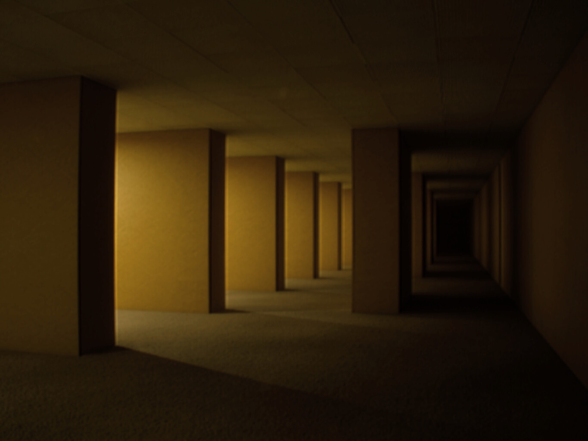
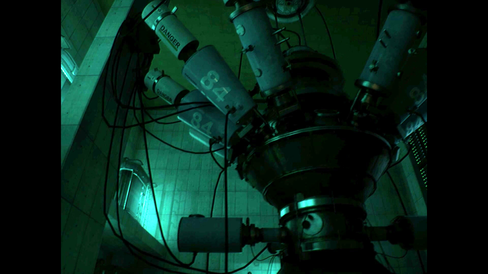
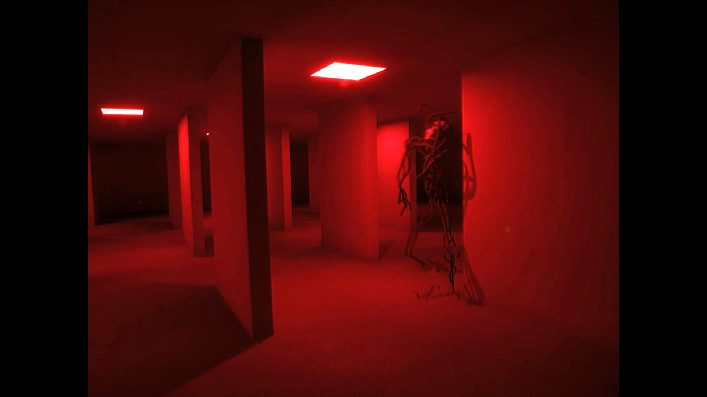
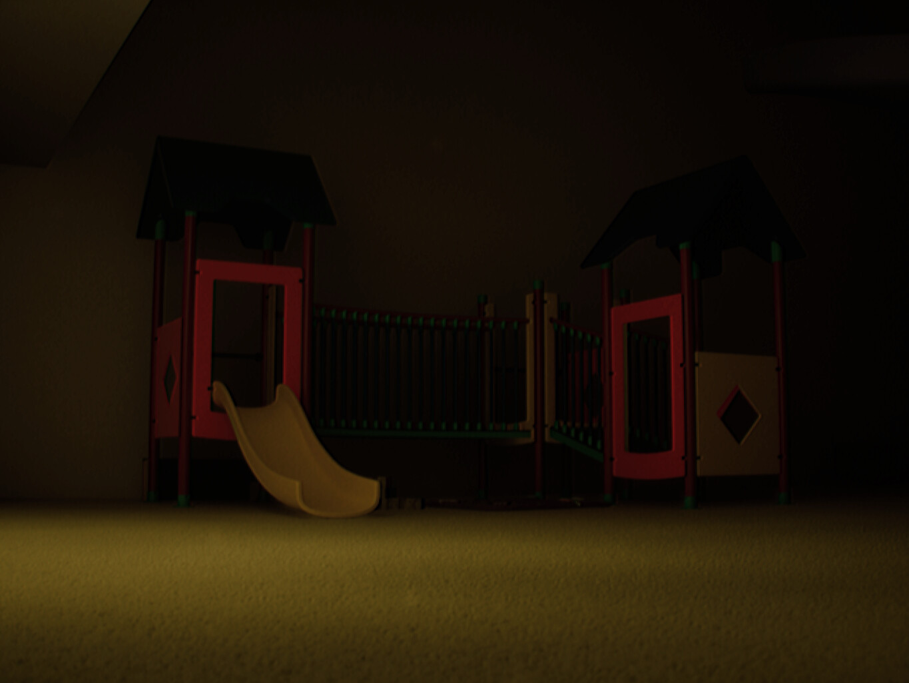
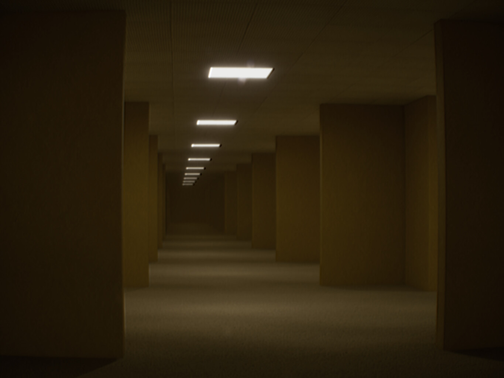
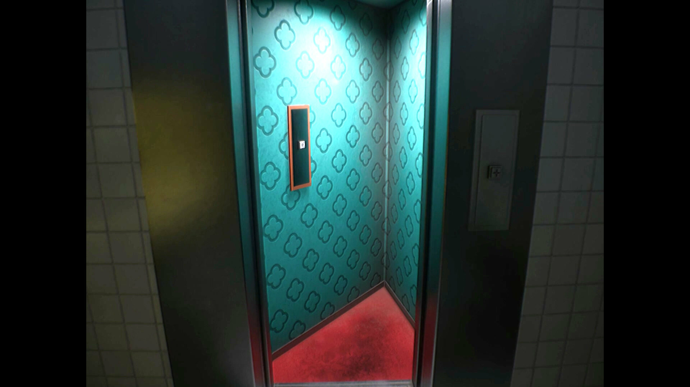
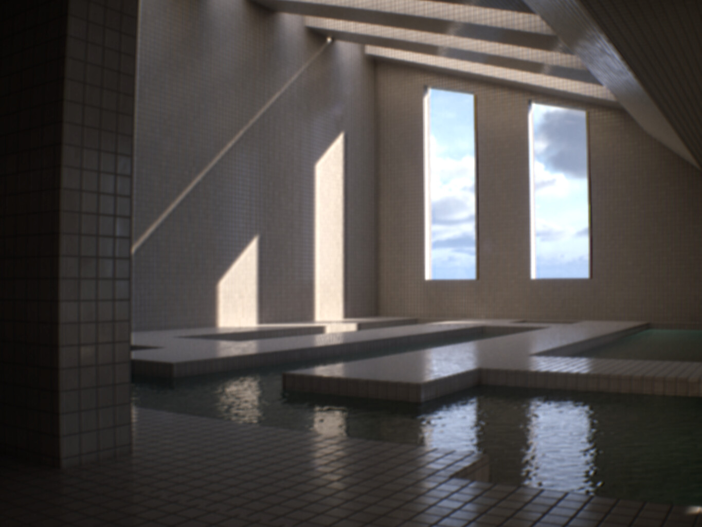
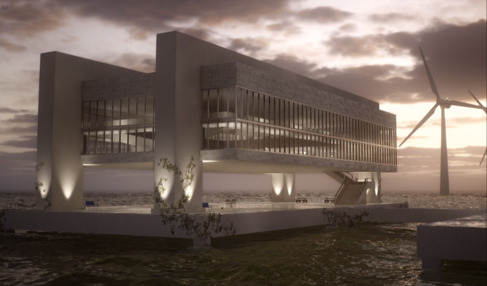
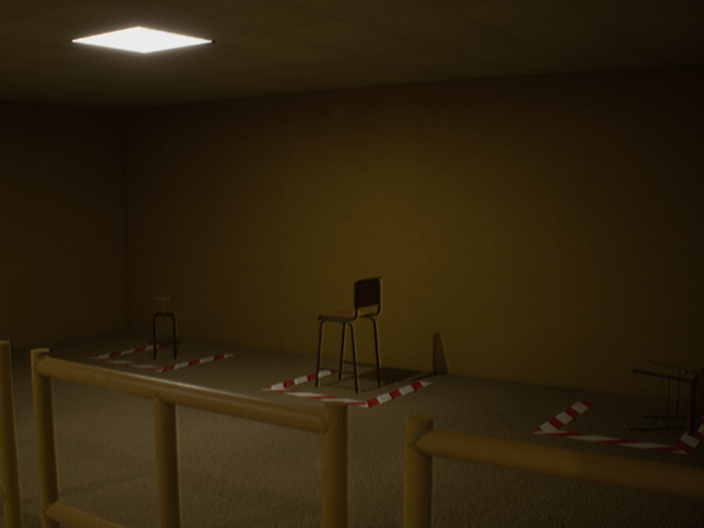
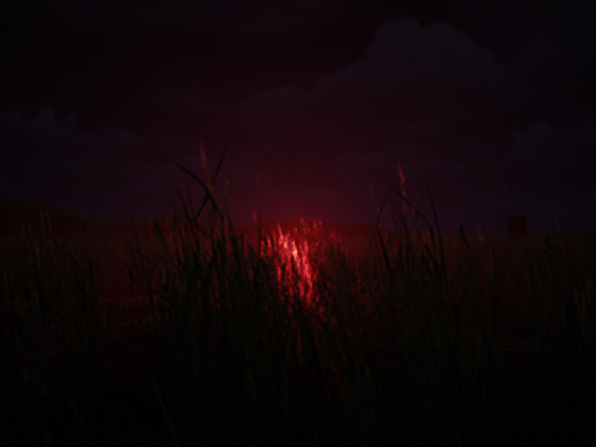

You work in the cinema as an usher and accidentally fell into the Backrooms, now being trapped, needing to unravel the mysteries of the yellow rooms in order to get out of this place, but be careful, there are entities that will be in your way.
An immersive walking simulator through the mysterious and unsettling world of the Backrooms, separated by Tapes (Chapters).
The Tape of Josh
PLAYABLE
The Tape of Nikolas
PLAYABLE
Tape 03 - [REDACTED]
CORRUPTED
Tape 04 - [REDACTED]
CORRUPTED
Tape 05 - [REDACTED]
CORRUPTED










1 / 10